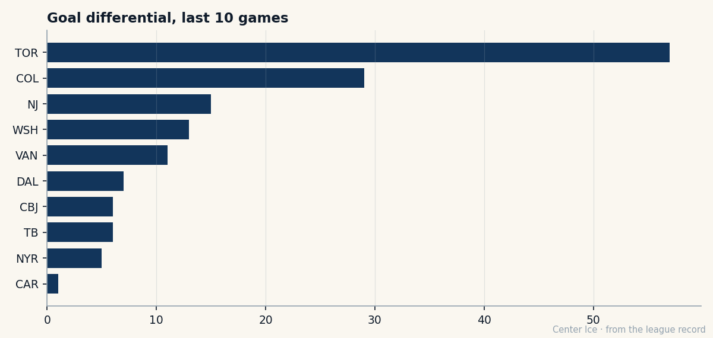

SJ
SJWhat the Book Never Said: Toronto's young men, all arriving at once
4 under-23s on the Index risers in the same fortnight, 11 straight wins, and a goal differential that makes the rest of the league look like a different sport.
 Carol BinghamFeatures writer · Rinkside
Carol BinghamFeatures writer · RinksideThere is a moment in every young team's season when the development stops being a promise and becomes a fact. You can feel it in the building before you see it on the scoresheet -- a looseness, a refusal to flinch, the particular confidence of players who have just discovered that the thing they practiced in November is the thing that wins in December. For  Toronto Maple Leafs, that moment arrived somewhere between November 12 and December 3, and it has not stopped arriving since.
Toronto Maple Leafs, that moment arrived somewhere between November 12 and December 3, and it has not stopped arriving since.
The numbers from the last 10 games are almost absurd: 75 goals scored, 18 allowed, a differential of +57. The next best club in the league over the same stretch is  Colorado Avalanche at +29. Colorado is the 2nd-best team in hockey right now, and Toronto is nearly twice as dominant. It is not a gap. It is a different sport being played in a different rink.
Colorado Avalanche at +29. Colorado is the 2nd-best team in hockey right now, and Toronto is nearly twice as dominant. It is not a gap. It is a different sport being played in a different rink.

But the scoresheet is the easy part. The interesting part -- the part that makes a features writer lean forward in her chair and pull the development index up on a screen she is not supposed to use this late in the afternoon -- is that Toronto's surge is not being driven by one player having the time of his life. It is being driven by 4 young men arriving on the Index at the same time, in the same window, as though someone told them collectively to grow up on schedule.
 Marian Gaborik95 is the most obvious. At 22, on a $1.10M contract in the final year of his deal, the Book has him at 96 overall -- 6 full points above his base of 91, the single largest form jump in the league. 34 points in 25 games. His acceleration grade reads 99. His speed reads 99. His puck control reads 99. These are not the grades of a player who is figuring it out. These are the grades of a player who figured it out 2 months ago and is now just collecting the receipts. His morale sits at 92, which for a man making a tenth of what he will eventually be paid is a small kindness the universe extended to him and he is not wasting.
Marian Gaborik95 is the most obvious. At 22, on a $1.10M contract in the final year of his deal, the Book has him at 96 overall -- 6 full points above his base of 91, the single largest form jump in the league. 34 points in 25 games. His acceleration grade reads 99. His speed reads 99. His puck control reads 99. These are not the grades of a player who is figuring it out. These are the grades of a player who figured it out 2 months ago and is now just collecting the receipts. His morale sits at 92, which for a man making a tenth of what he will eventually be paid is a small kindness the universe extended to him and he is not wasting.
What makes Gaborik's leap remarkable is that it is not alone.  Rick Nash80, 20 years old, 12.9 minutes a night, has the Index at +5 on a base of 77. 22 points in 25 games for a kid who was a lottery pick 3 seasons ago and is still, by the Book's arithmetic, a work in progress. His shot power reads 96. His strength reads 94. The potential the Bureau put on him when he was 18 -- 95 -- is not a ceiling. It is a schedule he is keeping.
Rick Nash80, 20 years old, 12.9 minutes a night, has the Index at +5 on a base of 77. 22 points in 25 games for a kid who was a lottery pick 3 seasons ago and is still, by the Book's arithmetic, a work in progress. His shot power reads 96. His strength reads 94. The potential the Bureau put on him when he was 18 -- 95 -- is not a ceiling. It is a schedule he is keeping.
 Brad Richards84, 24, has the Index at +4 on a base of 82, and 27 points in 25 games on a $1.00M contract. He is the quiet engine in this thing, the man who makes the others look smarter by being exactly where they need him. His passing grade is 93. His heroism grade is 95. He is not the headline. He is the reason the headline is possible.
Brad Richards84, 24, has the Index at +4 on a base of 82, and 27 points in 25 games on a $1.00M contract. He is the quiet engine in this thing, the man who makes the others look smarter by being exactly where they need him. His passing grade is 93. His heroism grade is 95. He is not the headline. He is the reason the headline is possible.
And then there is  Rostislav Klesla81, 22, a defenceman with the Index at +5, 13 points in 25 games, and a potential of 97 that the Book has kept in its back pocket since he was a teenager. His aggression sits at 69 -- he is not the loudest man in the room -- but his endurance is 57 and his speed is 91, which means he is somewhere between a shut-down specialist and a puck-mover who has not yet decided which one he wants to be. He is 22. He has time to decide.
Rostislav Klesla81, 22, a defenceman with the Index at +5, 13 points in 25 games, and a potential of 97 that the Book has kept in its back pocket since he was a teenager. His aggression sits at 69 -- he is not the loudest man in the room -- but his endurance is 57 and his speed is 91, which means he is somewhere between a shut-down specialist and a puck-mover who has not yet decided which one he wants to be. He is 22. He has time to decide.
4 young men. 4 simultaneous surges. The Bureau tracks thousands of players and publishes these Index figures weekly, and the statistical likelihood of 4 players on the same roster all jumping 5 or more points in the same window is vanishingly small. It happens the way thunder happens: a buildup you cannot see, and then a sound that makes everyone look up.
The rest of Toronto's young core is right behind them. Scottie Upshall76, 21, carries a potential of 99 -- the highest in the league alongside Steve Eminger74, who is also 21, also on this roster, also not yet the player the Book says he will be. Petr Chlup81 is 18 years old with an overall of 82 and 8 points in 14 games.  Stanislav Chistov79 is 21 with a base potential of 95.
Stanislav Chistov79 is 21 with a base potential of 95.  Nikita Alexeev75 is 22 with 15 points in 25 games. This is not a team with 2 or 3 good young players. This is a team whose entire identity is young players who have just discovered they are good.
Nikita Alexeev75 is 22 with 15 points in 25 games. This is not a team with 2 or 3 good young players. This is a team whose entire identity is young players who have just discovered they are good.
The veterans understand their place in this.  Alexander Mogilny85, 35, has the Index below his base -- a faller, down from 90 to 86 -- and 39 points in 25 games that say he is still brilliant in the way that a river is still a river even as it slows. He does not need to carry this team.
Alexander Mogilny85, 35, has the Index below his base -- a faller, down from 90 to 86 -- and 39 points in 25 games that say he is still brilliant in the way that a river is still a river even as it slows. He does not need to carry this team.  Gary Roberts85, 38, knows it too: 32 points, morale at 92, an overall of 86. These men are not threatened by the young men around them. They are relieved. They have been waiting for this, and they are not going to spoil it by being proud.
Gary Roberts85, 38, knows it too: 32 points, morale at 92, an overall of 86. These men are not threatened by the young men around them. They are relieved. They have been waiting for this, and they are not going to spoil it by being proud.
And the business side of it makes the whole thing feel almost obscene in its balance. Toronto's payroll sits at $66.97M with a per-point cost of $1.67M, which is neither the cheapest nor the most expensive way to buy a point in this league. But their revenue is $57.01M, the highest of any club. Their profit is $28.75M. Their ticket price is $97, the highest in the league, and their attendance of 17408 per game is 2nd only to  New Jersey Devils. The prestige points sit at 483, the most of any franchise. They went 5 rounds deep in the playoffs last season. They have 1 Cup.
New Jersey Devils. The prestige points sit at 483, the most of any franchise. They went 5 rounds deep in the playoffs last season. They have 1 Cup.
None of that is new. The Maple Leafs are always the richest, loudest, most watched thing in this league. What is new is that they are also, right now, the most terrifying team in it. The 11-game winning streak -- dating back to November 12 -- includes a 13-0 demolition of  Buffalo Sabres and a 12-3 dismantling of
Buffalo Sabres and a 12-3 dismantling of  Philadelphia Flyers. The last game before the streak began was a 5-4 loss to San Jose. They have not lost since.
Philadelphia Flyers. The last game before the streak began was a 5-4 loss to San Jose. They have not lost since.
Here is the thing the Book never said, the thing that was always there in the arithmetic but never in the story: Toronto did not need a trade. They did not need a free-agent signing or a coaching change or a new GM with a philosophy. They needed time. They needed Gaborik to be 22 instead of 19, Nash to be 20 instead of 18, Richards to be 24 instead of 21, Klesla to be 22 instead of 20. They needed their young men to arrive together, which is the rarest thing in hockey, which is the thing that turns a good team into a team that makes you feel slightly ill watching it win.
The streak will end. It always ends. But the development will not -- the Index will keep its +5 and +6 and +4 for weeks yet, and the points will keep coming, and the differential will keep widening, and somewhere in the back of every other GM's mind is the same cold thought: they are still 20, 21, 22, 24 years old. They are still getting better. And nobody in this league has an answer for what they look like at 23, 24, 25, 27.
The Book said they were good. It did not say they were going to do this, all at once, in the same fortnight, with the same look on their faces.